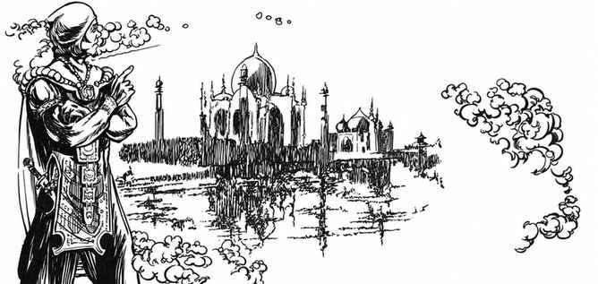

奥术海市蜃楼 · Mirage Arcane
与空置幻景相似，但更强、更复杂；也近似小法术海市蜃楼。幻术师可把区域变得像自己所设想的另一处地方，但此地须是施法者本人亲眼见过的真实地点。只要维持少量专注，法术便一直存在；停止专注后仍持续 6 回合＋每级 1 回合。这种轻度专注允许正常交谈，但不能在施法、近战或受攻击伤害时维持。
基本版本施法 3 段；除魔法侦测器具或法术外，须通过用力接触、触觉发现异常，才有希望识破。若施法者持有与所拟地点有关的一小片材料，施法时间改为 6 段，景象便带有某种真实感；此版本只能用魔法器具、物品或法术发现。两种版本均可被解除幻象或解除魔法消除。
强力幻象会使旁观者的心智对身体产生相应作用，但信念通常不能改变自然与魔法规律：有人可能以为炽热煤床是凉爽浅溪，踏过却不受伤；吃下幻造食物却真正得到营养；把尖石床当成羽绒床而安睡。重力仍有效，凭空想出的跨谷桥不会托住行人。旁观者看见跌落者时，只会看见其突然消失；除非另知有魔法，不会把此事联想到幻象。
